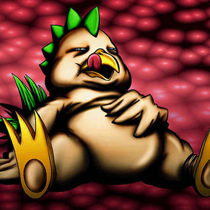

Niwatori

Description: "While this card is face-up in the defense position, all recovery values to LP are doubled. Strong in TOON terrain."
STATS
ATK: 900
DEF: 800DECK COST
Deck Cost per Card: 22EFFECT NOT IMPLEMENTED
Fusion List (3 Possible Fusions)
- Niwatori + Dark Rabbit = Garvas
- Niwatori + Dissolverock = Mavelus
- Niwatori + Dragon Piper = Mavelus